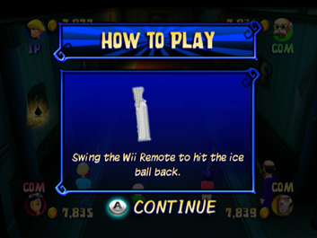

9 |
Gameplay |
 |
Choose a character and enter the mansion, where you’ll be faced with many mini-games, On-Board Challenges and special events triggered by the various cells you pass or land on. All of this will get you closer to finding the password to the hidden treasure! Difficulty Screen In this screen you decide the difficulty you want to play. There are three levels (Easy, Normal, and Hard). In the more difficult levels, the riddles will be harder to answer, making the secret password more difficult to guess. Note that as you progress through Adventure mode, the mini-games will progressively get harder. Select Character Screen and Choose Number of Human Players Screen In this screen the players will decide which of the four characters they will play as and how many computer-controlled players there will be. You can reach the Choose Number of Human Players screen from the Select Character screen. There are four settings to choose from: 1 Human Player and 3 COMs 2 Human Players and 2 COMs 3 Human Players and 1 COM 4 Human Players Joining in the Middle of a Game At any time during a game, a human player can replace a COM player. The new player must connect the Wii Remote to the Wii console (if it has not already been done). The new player will replace the COM player corresponding to the Player Indicator of his/her Wii Remote. For example, a Wii Remote showing Player Indicator 3 would replace the COM-controlled Player 3. The new player continues playing with the amount of money that the COM player has accumulated up to that point. Once a new player has joined he/she can no longer be replaced by a COM player. On-Board Challenge Tutorial Screen  When an On-Board Challenge is started, a screen explaining how to play it will be displayed. Unlock Mini-games At first, not all mini-games can be played in Mini-Game mode. But as you progress through Adventure mode, you will unlock more of Mini-Game mode. |
 |
 |
 |